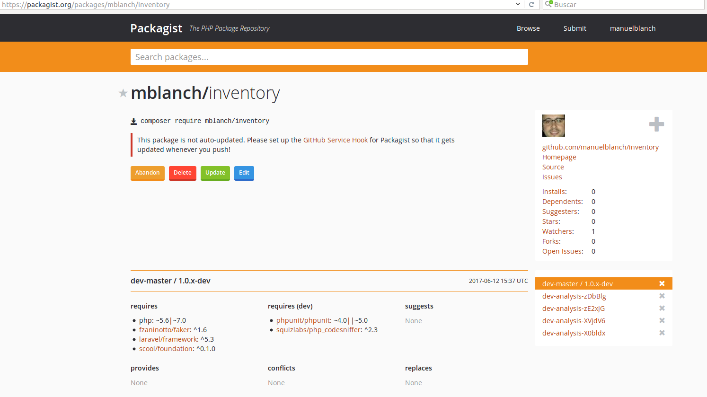
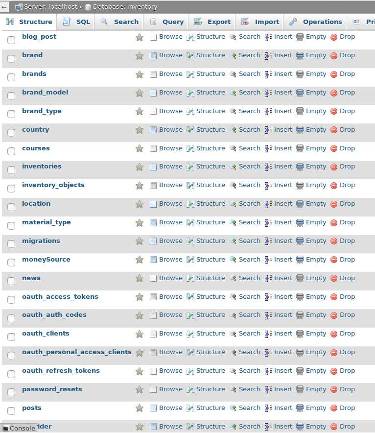
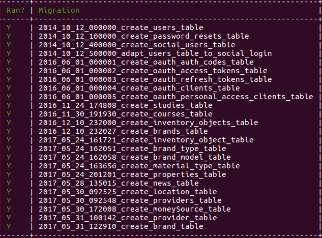
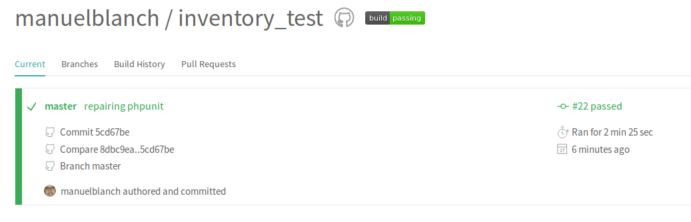
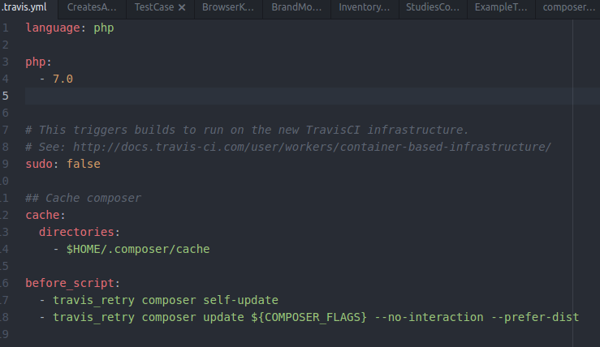
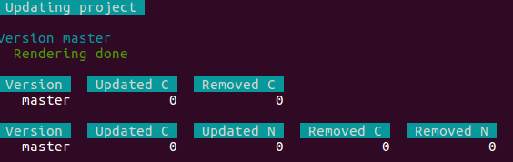

Presentacio Manuel Blanch
Pagina inicial presentació
Index 1/2
Pagines incloses
- Projecte Inventari
- Projecte paquet
- Bases de Dades
- Relacions
- Migracions
- Comandes artisan
- Vistes
- Dropdown
- Calendar
Index 2/2
Pagines incloses
- Rutes
- Search
- Export
- Oauth Github
- Landing Page
- Continuous Integration
- Api Docs
- Links
Projecte Inventari
El projecte es un sistema de inventari on podrem guardar objectes de l'inventari en una base de dades i que esta comunicada per diferents manteniments que mantenen una relació amb el inventari principal.
Paquet Inventari
El paquet del projecte inventary esta situat en el github i tambe esta pujat al packagist.
Pagina principal packagist

Bases de dades
Les bases de dades utilitzen el sistema mysql, per a poder fer servir les bases de dades haurem de realitzar
la seva migració a traves de les comandes arisan corresponents, abans de tot haurem de crear la base de dades.
Preview de les taules que componen la base de dades


Relacions
L'aplicació esta composta de una pagina principal per a poder introduir objectes a l'inventari, aquesta taula principal es comunica amb
els 6 manteniments que esta format el inventari, es per aixo que s'han establert les relacions adients entre totes les taules per tal de poder introduir les dades amb la màxima quantitat d'informació.
Codi relacions taula principal inventari


Migracions
Per a poder introduir a l'interior de la base de dades totes les taules necessaries amb els seus items utilitzarem les migracions de laravel per
tal de poder crear les taules i migrar-les a la base de dades.
Codi de mostra de la migracio de la taula inventari

Comandes Artisan
Artisan es la línia de comandes que utilitza laravel per tal de poder crear i assistir en l'aplicació i en la creació de tots elements
que componen l'aplicactiu en laravel
Codi de mostra de la execució de la comanda php artisan migrate:status


Vistes
Per a poder crear les vistes de l'aplicació per a poder interaccionar amb ella hem fet servir el template adminlte
mitjançant les vistes i els layouts podrem muntar l'aplicació com nosaltres desitjem
Mostra de la vista inventari principal

Dropdown Select 2
En la secció de inventari en la part de creació i edició per tal de poder escollir els diferents manteniments
per a la introducció de l'objecte a la base de dades es fa servir Select2el qual es un selector personalitzable amb suport per a la recerca,
l'etiquetatge, desplaçament infinit i altres opcions.
Mostra de codi del dropdown select 2
Dropdown Calendar
Per a la introducció de dates a l'aplicació es fara servir de un formulari de calendari que ens
permetra escollir de una forma senzilla les dates que introduirem a la base de dades.
Mostra d'us del dropdown calendar
Rutes
Per al correcte funcionament de l'aplicació existeix un fitxer de rutes on introduirem totes les rutes
necessaries per a que l'aplicació es comunique entre ella i tots els arxius que composen l'aplicació
Codi mostra de el fitxer responsable de les rutes
Search
L'aplicació en cada manteniment i la pagina inicial del inventari ens permet fer una
busqueda a traves de la base de dades introduint diferents dades de busqueda i ens retorna el resultat de la busqueda a la mateixa aplicació.
Codi de mostra del layout de Busqueda
Export
L'aplicació es capaç de poder exportar en un arxiu pdf o en un arxiu format excel tots els objectes de l'inventari situats
en un interval de temps que nosaltres podrem configurar a traves de la pàgina export.
Fragment de codi de la vista export

Oauth Github
Oauth es un estandar que ens permet obtenir autenticació per a aplicacions ja siquen web o aplicacions
informàtiques, ens podrem loguejar a l'aplicació mitjançant el nostre compte de github.
Codi de mostra de la configuració oauth


Landing Page
La landing page es la pagina inicial que tenim al principi de la aplicació, desde aquesta pagina ens podem registrar i loguejar
a l'aplicatiu de una forma directa, tambe mostra un resum petit de funcionalitats de l'aplicació.
Mostra del codi vista Landing page

Continuous Integration
Per a poder obtenir un codi correcte a la hora de realitzar l'aplicació i poder realitzar un analisi i testos continuats
farem servir diferents eines per tal de poder realitzar els analisis. Aquestes eines son Style CI, Travis CI i Scrutinizer

Api Docs
El projecte de inventari conte una documentació generada anomenada API,
aquesta documentació dona informació de les diferents classes i informació de l'aplicació per a una consulta posterior.